rainywaves
Mi sitio explica qué construyo y cómo es trabajar conmigo.
Ver el sitio ↗11:48 pmla calle ya cerró. Esta luz, no.
Guadalajara, México

12:20 amprimero, escuchar
Una pregunta para empezar1:05 am
1:40 amventanas encendidas
Mi sitio explica qué construyo y cómo es trabajar conmigo.
Ver el sitio ↗Las reseñas de Google de varias sucursales llegan a una bandeja.
Ver el producto ↗Un generador prepara firmas corporativas individuales o por lote.
Ver el caso ↗2:30 amlo que hay en la barra
3:15 amsin humo
Vemos tu proceso. Alcance, precio y plazo quedan por escrito.
Tu equipo usa avances pequeños cada semana.
El código y las cuentas son tuyos. Te acompaño al ponerlo en marcha.
3:50 amcuentas a la vista
4:40 amquién atiende
rainywaves es mi taller independiente. También hago webs, SEO (que te encuentren en Google) y tu ficha de Google.
5:58 amya casi amanece